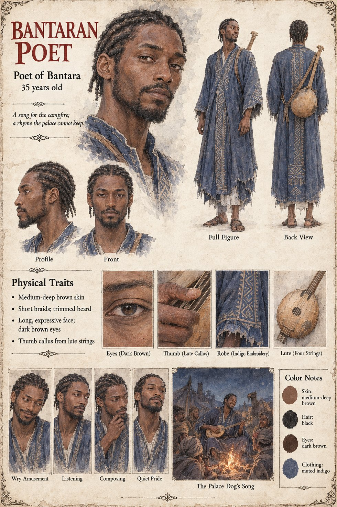

Bantaran Poet
Poet of Bantara · composer of the song of the palace dog · unnamed · 35 years old on his sheet
In the five years between the trader's arrival and the king's death, a Bantaran poet composed a song about it, whose refrain rhymed grey with stay and was sung in caravan camps as far as the northern wells by men who could not have found Kambaso on a map. The dog's fame, which had been a marvel, has become a habit. The poet is named nowhere and speaks nowhere. In Chapter Fourteen the song has a second use: Fode, rejecting the idea of sending the dog over the border, sees a sand-colored animal that does not age in every caravan camp where a Bantaran poet's refrain was already sung, and concludes that a sign that can be sighted can be claimed.
The manuscript gives the poet, the song and the refrain; it does not give a line of the song, a name, an age or a face, and does not say whether the poet has seen the dog. The sheet's age of 35, medium-deep brown skin, short braids, trimmed beard, long expressive face, dark brown eyes, thumb callus, indigo embroidered robe and four-string lute are its own. Its line, A song for the campfire; a rhyme the palace cannot keep., is its own too; its panels are Wry Amusement, Listening, Composing and Quiet Pride, and its scene is The Palace Dog's Song, which sets him by a campfire among listeners.
“a Bantaran poet composed a song about it, whose refrain rhymed grey with stay”